Introduction
What is OAUTH2?
More and more we all face situations where we have a mobile device with us, that runs many more or less usefull applications. These applications often provide similar functionality, but scope of the functionality somewhat differs. For instance, your iPhone contains nice document reader, your Android tablet has its own reader and your notebook has yet another one. All these applications share ability to read and display documents. But these documents do not necessarily live locally on all your devices. You use a service, like Google Drive to store your files for sharing. And here we go. In order to access your documents from Google Drive, all you applications need to identify themselves so Google grants them access (in other words, autorizes them) to your files. And that's why OAuth protocol emerged. Its puprose it to standardize authorization process in the connected environment, namely in Http world. Currently,OAuth2.0 is the latest version. This framework is extendable, one of possible extensions is allowing applications to retrieve user information - authenticate users. This initiative is called OpenID Connect.
Following diagram shows one of several possible message flows between involved entities - the resource owner (server), the authorization server and the client (application).
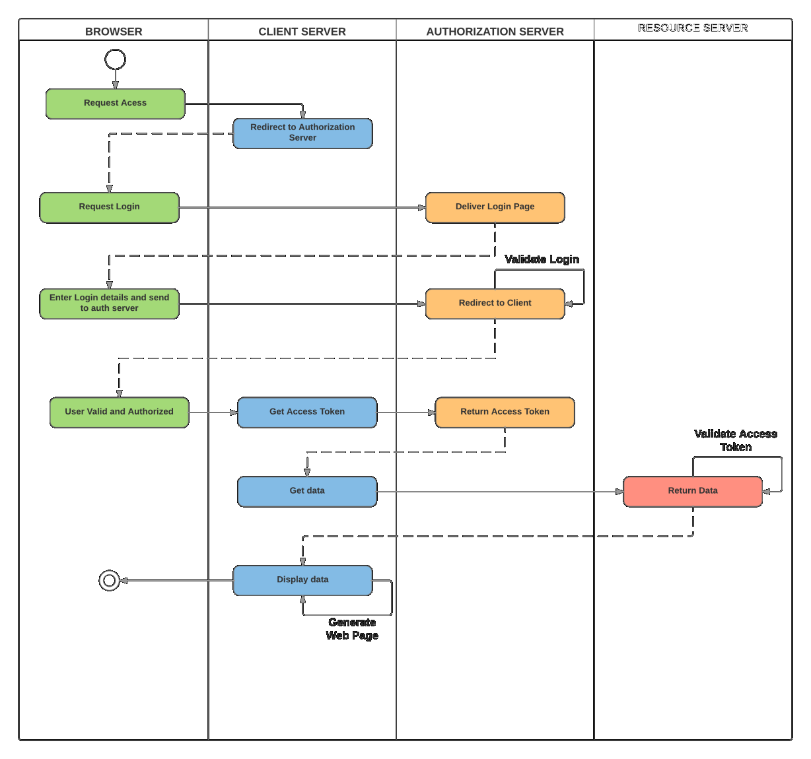
Demo 1
TopUsing OAUTH2 with Cache´
In this demonstration we will learn how to call from Cache´ to third party server that uses OAuth2 to authorize other applications users for calling its funtionality.
This demonstration illustrates following possible use case. Suppose you have a Cache´ based (web) application, that runs a DMS system. As part of application funtionality, you want provide application users access to their Google Drive so they can download documents from your central repository into their Google Drive. Why? Because with Google Drive they can work with their files at any mobile device, not only at their desktop used for their office work.
Prerequisites
Web server configuration
As it is required to use SSL, you have to configure your Web server to work with traffic encryption. We are not going into the details of how to configure various web servers (IIS, Apache, ...) for SSL. Please refer to particular web server documentation.
Cache´ SSL configuration
For establishing SSL channel to Google, we need to create SSL/TLS configuration. Use System > Security Management > SSL/TLS Configurations menu to do that. For the purpose of demo, name the configuration GOOGLE and check Type = client and Server Certificate Verification = none. Leave the rest of form with default values.
Cache´ OAUTH2 configuration
OAUTH2 Server Configuration
First, we need to configure OAUTH2 authorization server - various endpoints per OAuth2 specification. Following images demonstrate sample server configuration.
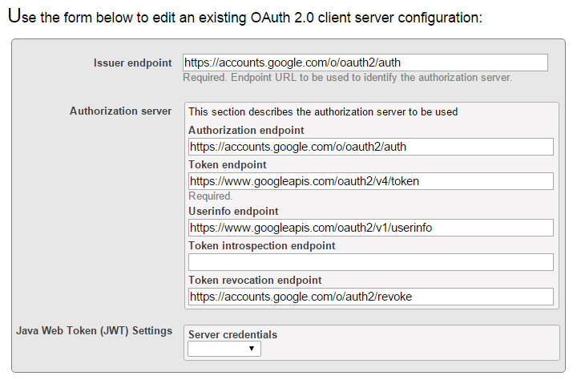
Use System > Security Management > OAuth 2.0 Client Configurations
to create or edit your configuration.
Client Configuration
Once we have server configuration created, we need to provide this server's client configuration(s). The image shows sample configuration.
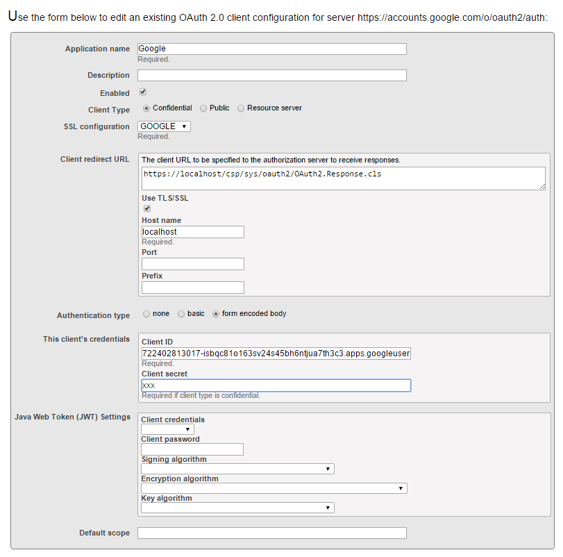
Use
System > Security Management > OAuth 2.0 Client Configuration > Client Configuration
to create or edit your configuration.
Code explained
The code itself is quite simple. What you need in order to call OAuth2 server is just a CSP/ZEN page with some server side script that checks whether your page has already been authorized and clear eventual access token. Then, you need to a URL to OAuth2 server and button or some other form of link to that url.
Initiation page
In our demo, the initiation page is just a standard CSP class. As mentioned above, we provide a server side code to ensure we have fresh access token and url to OAuth2 server. 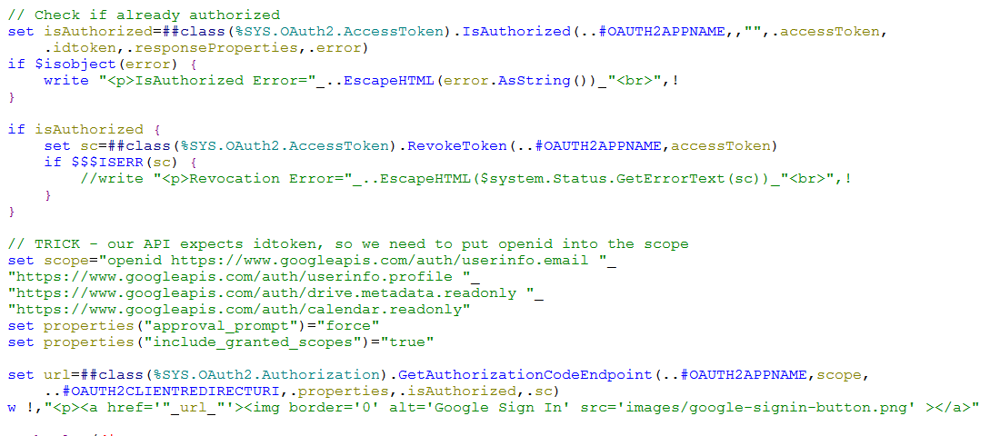 The code calls two API classes provided by Cache´ OAuth2 framework.
- First, we call method IsAuthorized() of %SYS.OAuth2.AccessToken class. This method checks whether any potentially existing access token is authorized.
- Second, we retrieve url by calling GetAuthorizationCodeEndpoint() method of %SYS.OAuth2.Authorization class. There are more methods available with this class, corresponding to various Oauth2 authorization options.
Result page
Once we click a Google API link/button we are navigated to the Google Consent Page. This page is launched by Google and, per specification in the url, we may or must consent. Having accepted consent, Google redirects the consent page to the redirect_URI we provided with the url. Redirected page can now call Google API functions as it has been authorized and posesses valid access token.
We need to call GetAccessTokenAuthorizationCode() method of %SYS.OAuth2.Authorization class as Google is not using default Basic authorization. We do that in page's OnPreHTTP callback method.
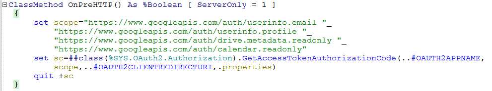
Now we can run a server side script, invoking either our implementation of some Google APIs (in fact, there is only one - userinfo) or invoking standard Http requests with access token supplied.
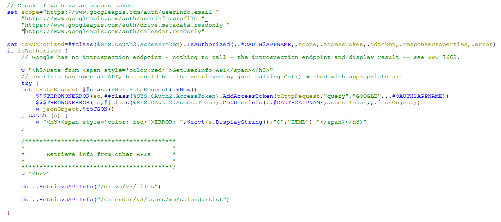
We add access token to the %Net.HttpRequest using AddAccessToken() method of %SYS.OAuth2.AccessToken class. Having added access token, we can call either Get() method of standard %Net.HttpRequest or we can call GetUserInfo() method of %SYS.OAuth2.AccessToken class to retrieve user information as stored by Google.
For more information about Google Apps and their scopes and urls please refer to here or here.
Demo 2
TopCache´ as OpenID / OAuth2 provider
This demonstration shows much more complex use case than the first demo. In this scenario, Cache server acts as a OAUTH2 authentication server, providing user identity and scopes to any other application. You would find this scenariou usefull in situations where you run an application on protected Cache´ server(s) within company perimeter. But you want to allow either your employees or people from outer world (e.g. doctors) to retrieve information form you protected server (clinical information system). There are again, two possible cases. You want to give a one-time access to external person, or you want make sure your employees are never using their password used inside your company perimeter, from his/her mobile device in order to access data from protected server. (You don't want for some reason to establish a VPN)
In this demo, Cache´ would also provide user identity, according to the OpenID Connect specification. If you wonder what is the difference between OAuth2 and OpenID then very briefly:
- OAuth 2.0 deals with user AUTHORIZATION, and leaves AUTHENTICATION untouched
- OpenID 2.0 deals with user AUTHENTICATION
- OpenID Connect deals with AUTHENTICATION but also integrates with OAuth 2.0 for AUTHORIZATION. (Some people say that OpenID Connect is in fact OAUTH2 on steriods.)
Prerequisites
Web server configuration
As it is required to use SSL, you have to configure your Web server to work with traffic encryption. We are not going into the details of how to configure various web servers (IIS, Apache, ...) for SSL. Please refer to particular web server documentation.
Cache´ Public Key Infrastructure
In most complex case, there would be many Cache´ resource servers using services of one or multiple Cache´ OAuth2 server(s). And there can be undetermined number of applications (e.g. Cache´ servers) consuming services of resource servers.
These servers have to communicate via SSL/TLS so there must be a PKI configured so each application and resource server can sign and verify identity requests and tokens.
On the other hand, in our demo, we will have just one server, playing all three roles: application, authorization & authentication and resource server.
We are not going into PKI setup details hre, but you can check online documentation.
Cache´ SSL configuration
For establishing SSL channel, we need to create SSL/TLS configuration. Use System > Security Management > SSL/TLS Configurations menu to do that. For the purpose of demo, name the configuration 'sslunittest' and check Type = client and Server Certificate Verification = none. Leave the rest of form with default values.
Cache´ OAUTH2 configuration
OAUTH2 Authorization Server Configuration
First, we need to configure an instance of Cache´ OAUTH2 authorization server.
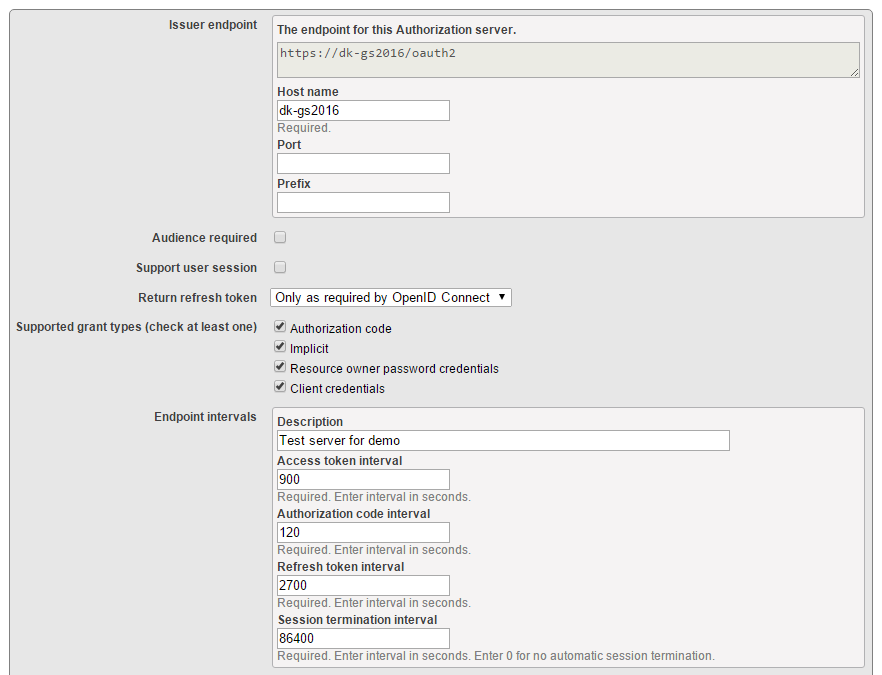
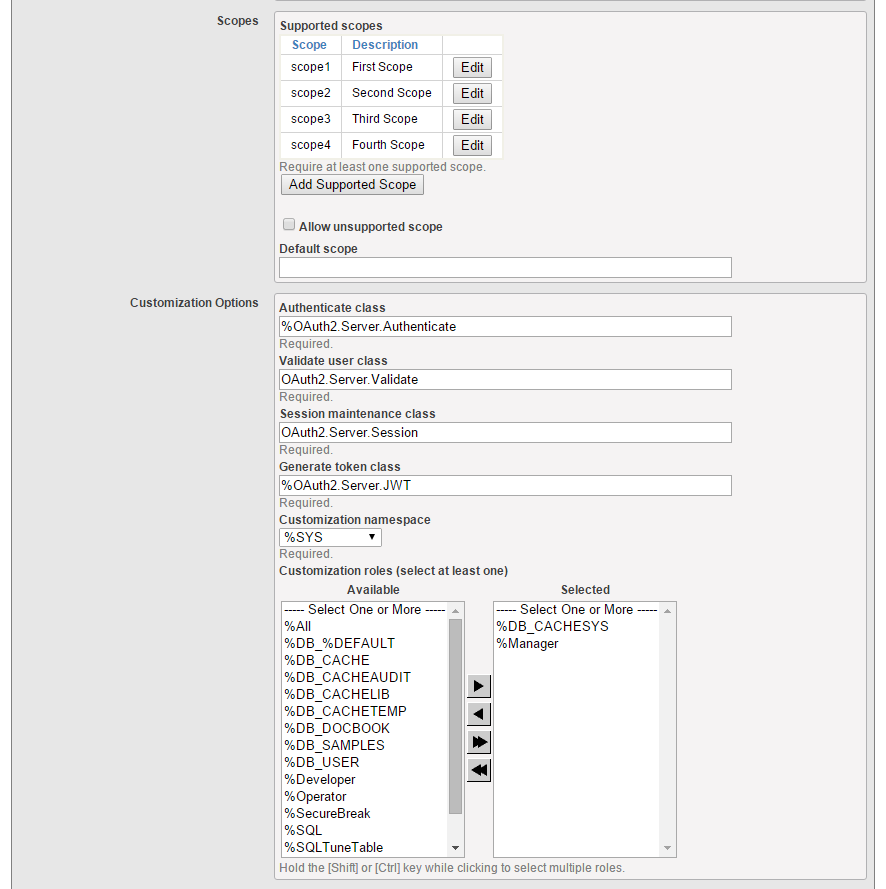
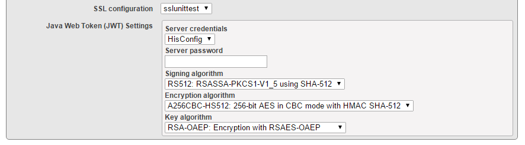
Use System > Security Management > OAuth 2.0 Authorization Server Configuration
to create or edit your configuration.
We, among others, supply server's host name, port and prefix (optional) to form issuer endpoint. Furtehr we specify supported grant types, scopes, SSL configuration
and setting for Java Web Token handling (used by OpenID Connect)
OAUTH2 Authorization Server Client Configurations
In order to establish trust between resource server and appplication (client) we must register them with authorization server as clients.
Client Configuration
Let's start with client application.
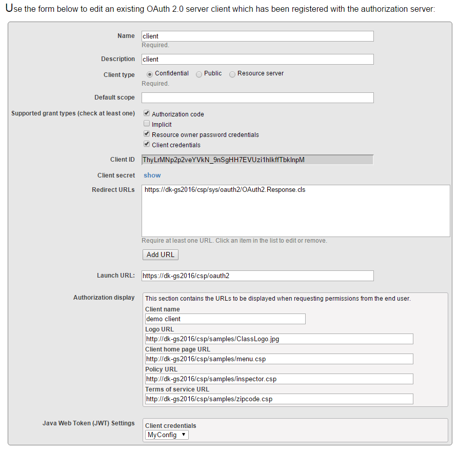
Use
System > Security Management > OAuth 2.0 Authorization Server > Server Client Configurations
to create or edit your configurations.
The application is a confidential client and supports authorization code as well as some other grant types.
Cache´ assigns Client ID and Client Secret values for this particula configuration. These values are unique foe each client.
We also must provide redirect URL(s) and optionally can modify the consent screen look and feel.
Lastly, we supply name of client application X.509 Credentials for working with JWT.
Resource configuration
Similar to client application, we need to configure our resource server.
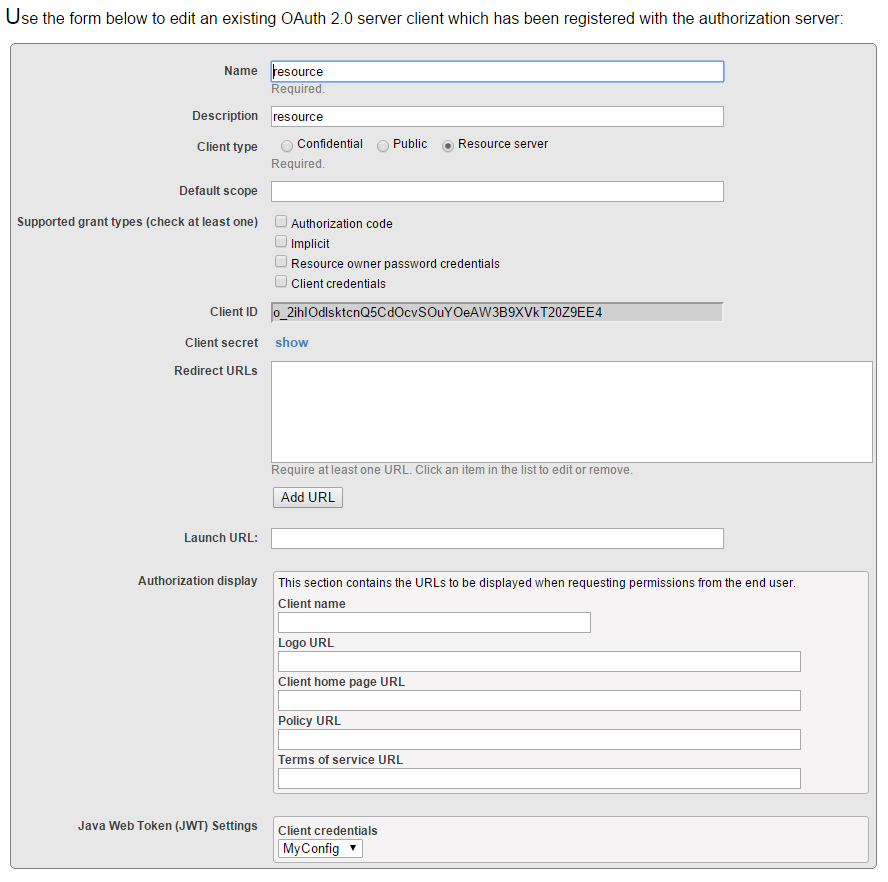
Use
System > Security Management > OAuth 2.0 Authorization Server > Server Client Configurations
to create or edit your configurations.
The resource is a resource server type client and defines no grant types, nor redirect URL(s).
Cache´ assigns Client ID and Client Secret values for this particula configuration. These values are unique foe each client.
We only supply name of client application X.509 Credentials for working with JWT.
Web Applications
In this demo, we will run client application code in /csp/oauth2 application, the OAUTH2 server in /oauth2 (it's a REST application) and finally, the resource application will run in /csp/portfolio.
/csp/oauth2 application
There is nothing special in the application deifnition. We use Password authentication method.
/oauth2 application
This is a REST application, used by Authentication server. Alowed authentication method is Unauthenticated. Dispatch class is OAuth2.Server.REST. Application assings %All role.
/csp/portfolio application
This is a standard application, used by Resource server. Alowed authentication methods are Password (for internal users) and Delegated (for users authenticated and authorized by Authorization server).
Delegated authentication
This is not necessary step, but setting up Delegated authentication may give resource server more control ove the security context of process serving response to the application server. Please read documentation for more details about delegated authentication.
Code explained
The code in this demo is very similar to first demo. There is only one difference: we must perform Java Web Token validation.
Initiation page
In our demo, the initiation page is just a standard CSP class. As mentioned above, we provide a server side code to ensure we have fresh access token and url to OAuth2 server.
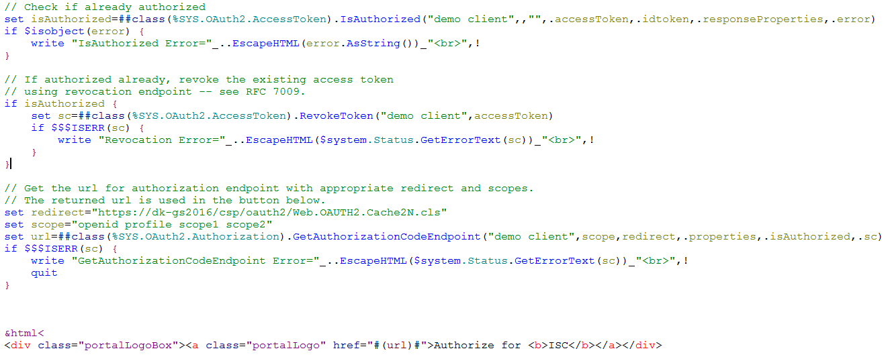
The code calls two API classes provided by Cache´ OAuth2 framework.
- First, we call method IsAuthorized() of %SYS.OAuth2.AccessToken class. This method checks whether any potentially existing access token is authorized.
- Second, we retrieve url by calling GetAuthorizationCodeEndpoint() method of %SYS.OAuth2.Authorization class. There are more methods available with this class, corresponding to various Oauth2 authorization options.
Please note, we have to call openid profile scope in order to use OpenID Connect authentication.
Result page
Once we click a Sign-in link/button we are navigated to the Cache´ OAUTH2 Consent Page. This page is launched by Cache´ authorization server instance and, per specification in the url, we may or must consent. Having accepted consent, Authorization server redirects the consent page to the redirect_URI we provided with the url. Redirected page can now call functions on Cache´ resource server as it has been authorized and posesses valid access token.
Optionally, if Delegated authentication is activated, the process on resource server is bound to newly created (or modified) delegated user corresponding to the username coming with the request from authorization server. Remember, resource server TRUSTS authorization server and simply accepts incoming username and assigns it role(s) as specified in the scope list.
We run a server side script, that performs following actions
1. Checks whether access token we received is still valid and that we are successfully authorized and validates Java Web Token as we asked for it via openid profile scope
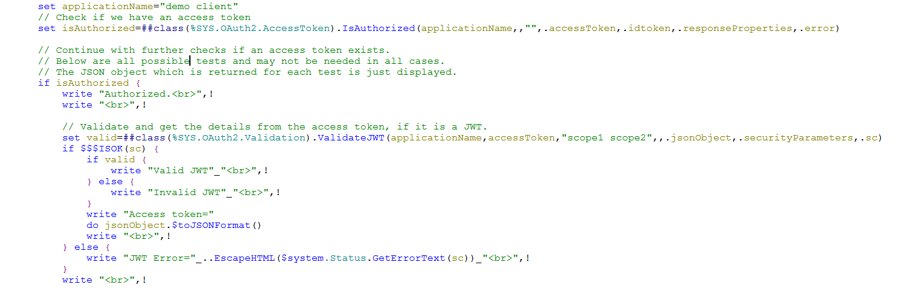
2. Introspects access Token and validates ID token
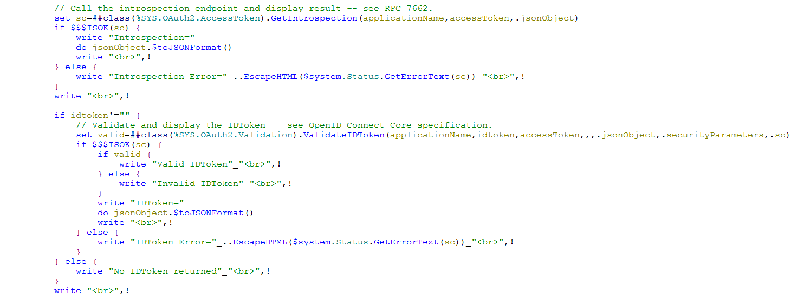
3. Retrieves user information from Authorization server
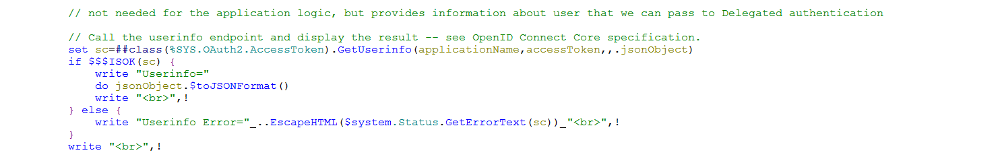
4. Calls resource server application logic to dispatch data to the client application
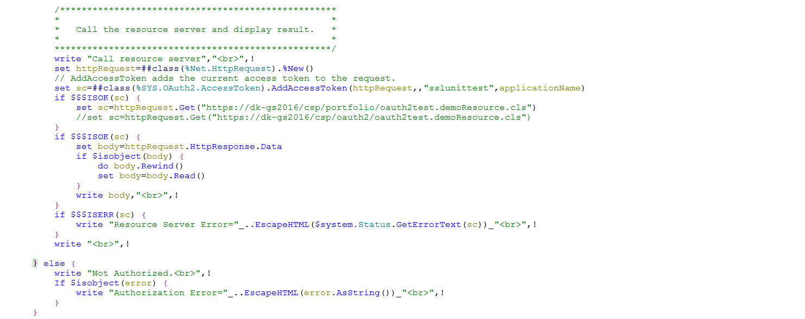
Conclusion
We have learned on two use case demonstrations how to benefit from new OAuth 2.0 framework implementation. We have seen both simple case, where Cache as a client application receives autorization from third party provider to access resources outside Cache´, as well as case where other application was given access to resource server by a Cache´ based OAuth 2.0 authorization server.
Back to Top